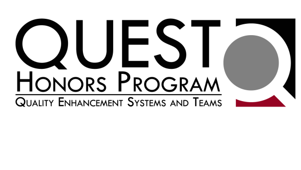
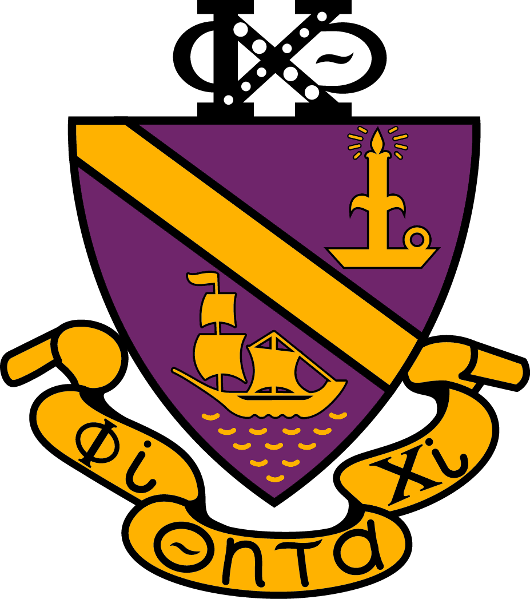

Vincent Yu
UMD. Junior. Finance & IS.
| Conquests | Description |
|---|---|
 | Vincent is an incoming Business Analyst intern at Capital for the summer of 2024. |
The Snider Consulting Group exists to help organizations achieve their vision of success through sustainable strategies, research, management, and process improvement. Vincent has been part of multiple projects, and is currently serving as a project team lead this semester, as well as an Associate Director of Case Development. Skills gained: Project Management, Client Communications, Team Management | |
|  | The QUEST (Quality Enhancement Systems and Teams) Honors Program is a three-year program for University of Maryland undergraduates studying business, engineering, and/or science. In his first semester of QUEST, Vincent worked with his team to consult for the Engineering Career Services of the A. James Clark School of Engineering at UMD. He analyzed old process for ECS volunteer registration and check-in to identify bottlenecks and inefficiencies, as well as programmed with Google App Script to create an automated process, saving the client ~ 5hr/week on manual data entry. Skills gained: DMEDI, Lean Six Sigma, Poster Design |
In the summer of his sophomore year, Vincent interned at PricewaterhouseCoopers (PwC), where he led a team of six interns in a pro bono client project for a nonprofit focused on STEM education, and ranked among top 15 of 143 teams nationwide for the final presentations. The project required him and his team to utilize Power BI to create compelling visuals and analyze trends within a dataset of over 750K data points. Skills gained: PowerBI, Data Cleaning, Excel, Slide Deck Design | |
|  | Phi Chi Theta is a National Professional Fraternity in Business and Economics. Vincent served as one of the two DEI Committee Members in his first semester in Phi Chi Theta, fostering an inclusive culture that supports and celebrates diverse voices of brothers through interactive training modules and analyzing weaknesses in training modules to develop new programs or modify and improve existing programs. Skills gained: Communication, Event Planning, Conflict Resolution |